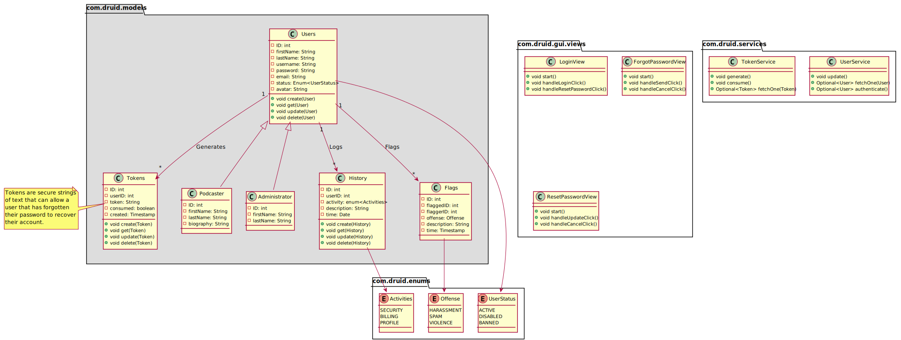

Magnum's modules and functionalities
Table of Contents
1. Modules
1.1. User Management

1.2. Podcast Management
1.2.1. Podcasts
+-----------------------------+ | Podcasts | |-----------------------------| | ID: int | | subscriptionID: int | | categoryID: int | | views: int = 0 | | title: String | | description: String | | hash: String | | rating: int | | podcasterID: int | +-----------------------------+
Attributes:
subscriptionID: References the ID column of the Subscriptions table. Unless it is NULL, the podcast is part of a subscription.categoryID: References the ID column of the Categories table.hash: A podcast's hash is calculated and stored in order to stop the re-uploading of already existing audio files (podcasts) within the database.
1.2.2. Categories
+---------------------+ | Categories | |---------------------| | ID: int | | name: String | | description: String | +---------------------+
1.3. Article Management
1.3.1. Articles
+------------------+ | Articles | |------------------| | ID: int | | authorID: int | | title: String | | content: String | +------------------+
1.3.2. Comments
+------------------+ | Comments | |------------------| | ID: int | | userID: int | | articleID: int | | message: String | | replyingTo: int | | submitDate: Date | +------------------+
Attributes:
1.4. Subscription Management
Podcasters can monetize their content in the form of subscriptions.
Users that choose to subscribe to said podcasters, must pay the fee determined by them.
1.4.1. Orders
+---------------------+ | Orders | |---------------------| | ID: int | | userID: int | | subscriptionID: int | | duration: int | | price: float | | orderDate: datetime | | startDate: datetime | | endDate: datetime | +---------------------+
Attributes:
userID: References the ID column of the Users table.subscriptionID: References the ID column of the Subscription table.
1.4.2. Subscriptions
+------------------+ | Subscriptions | |------------------| | ID: int | | podcasterID: int | | price: float | +------------------+
Attributes:
podcasterID: References the ID column of the Users table.
1.5. Ticket Management
1.5.1. Ticket
+----------------------------+
| Ticket |
|----------------------------|
| ID: int |
| submittedBy: int |
| resolvedBy: int |
| kindID: int |
| description: String |
| status: enum<Status> |
+----------------------------+
enum Status {
Resolved,
Closed,
Pending,
}
Attributes:
submittedBy: References the ID column of the Users table - The user that submitted the ticket.resolvedBy: References the ID column of the Users table - The user that resolved/handled the ticket.kindID: References the ID column of the Ticket Kind table.
1.5.2. Ticket Kind
+------------------------+
| TicketKind |
|------------------------|
| ID: int |
| priority: int |
| kind: enum<Kind> |
+------------------------+
enum Kind {
FeatureRequest,
BugReport,
FailedPayment,
AccountRecovery,
Other,
}
2. Functionalities
- Audio player.
- Discover page1.
- XML parser2.
- Keyboard navigation.
- Slur filter for the Comments model.
- Spam filter for the Podcasts model.
- Get started guide.